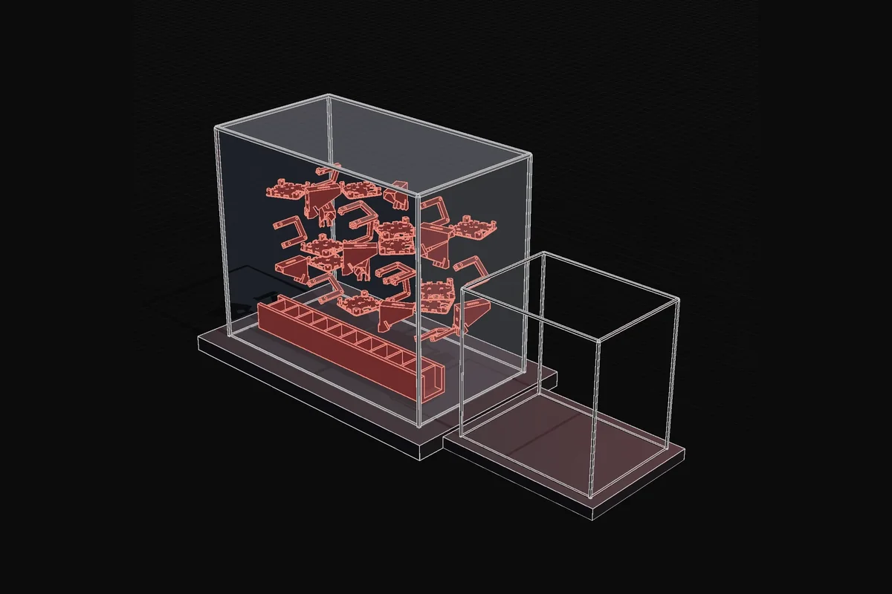

SLS

- Camera
- 700 × 380 × 580 mm
- Finiture
- F0–F3
- Tolleranze
- ±0,3 %, min. ±0,30 mm
- Parete minima
- 1 mm
- Quando no
- sopra i volumi da stampo
Sinterizzazione laser
[PA2200 · PA11 · TPU 90A]
Nessun supporto, pezzi annidati nella camera, pareti sottili e canali interni: la serie in poliammide fino a 700 mm.
Il processo SLS